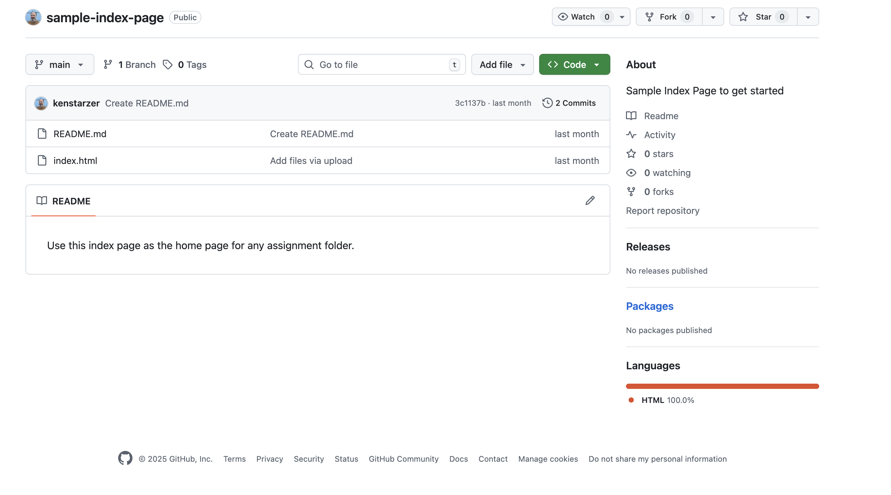
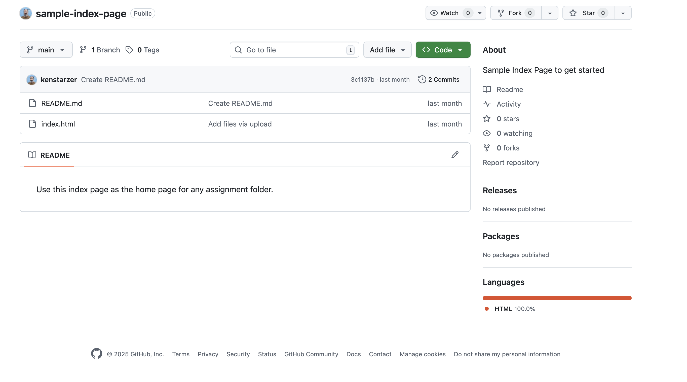

1. If you look at the images below, you can see that the word "languages" in the bottom right isn't clickable even though it looks the same as the other options and the other options are actually clickable.


2. Framing a creative project, even a website, in a story format forces you to truly feel what you're building. When you give the work characters, emotion, and story, you're able to become more attached to the project emotionally, resulting in a more convincing project. The story can also help to align scatted disciplines (video, web, etc.) into one cohesive purpose. Finally, the narrative also transforms a task driven project into a meaningful encounter, one that people will actually remember for some time.
3. Although it sounds backwards, the first step to choosing a type face is knowing your audience and what you're trying to communicate. You want to choose a font that goes with your theme but isn't distracting. The audience is important, because if you're trying to communicate that you're a high tech company but use comic sans its bad. You want to stick to one or two type families, but use different font weights for paragraphs, headers, clickable links, etc...
If you follow the guidelines set forth above, and test the aesthetics, you should be able to come out with a cohesive typography design. Here's a link to a Hotel website that I've stayed at that masters the typography design.